Gestion des mots de passe
Les pirates ne dorment jamais
Des campagnes de phising ont lieu en permanence , celles-ci ont pour but de vous faire ouvrir un mail , qui exécutera un script pour:
- voler des informations sur votre ordinateur
- exploiter une faille de votre navigateur internet
- vous amener à cliquer sur un lien qui mènne vers un faux site
- pour vous sous-tirer des informations, voir accéder à votre compte bancaire
C’est le même problème avec les réseaux wifi dit ouvert (gratuit), il est plutôt facile de mettre en place un faux portail de connexion afin d’usurper le portail légitime, toujours dans le but de vous voler les identifiants de connexion ou vos données bancaires.
Mais je digresse..
Quelques règles d’hygiène informatique
- Ne pas enregistrer les mots de passe dans le navigateur internet
- Ne pas utiliser d’information personnelle (date de naissance, nom, etc.)
- Ne pas utiliser le même mot de passe partout
- Utiliser des mots de passe complexes contenant majuscules, minuscules, chiffres, et caractères spéciaux
- Essayer d’utiliser des passphrases
- Mieux utiliser un gestionnaire de mot de passe
keepassXC
KeepassXC est une gestionnaire de mot de passe opensource, multiplateforme, qui foncionne en local sur votre machine et non sur une plateforme en ligne.
KeepassXC ou l’ensemble des gestionnaires de mots de passe vous permettent de:
- garder vos mots de passe en sécurité
- de créer des mots de passe complexes
- de créer des mots de passe différents
- d’utiliser votre base de mots de passe sur des appareils différents
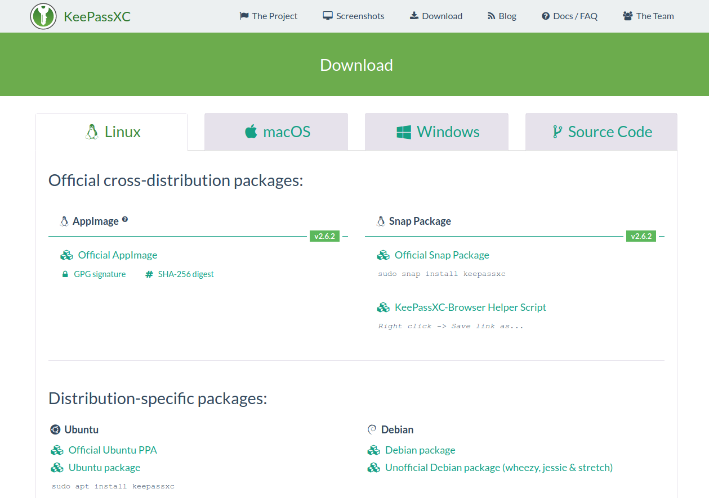
 Attention aux plateformes en ligne
Attention aux plateformes en ligne
Je dissuade formellement l’utilisation de ce genre d’outil.
- Ils sont soumis à de forte amende en cas de vol de données, s’il est avéré qu’ils n’ont pas observé le RGPD , ils ne vous diront pas la vérité, chercheront à gagner du temps et se déroberont à leurs obligations.
- Vous n’avez strictement aucune maîtrise sur l’outil
- Vous êtes totalement dépendant d’une connexion.
- Elles sont attaquées en permanence.
Installation
Rendez-vous sur le site de keepassXC, à la page de téléchargement.
Pour votre android utilisez le projet keepassDX disponible sur le playstore et sur F-Droid (dépôt d’application libre et open-source).
Installez simplement comme vous le feriez avec n’importe quelle application.
Ces applications utilisent le format de base de type kdb , ce qui fait que vous pouvez parfaitement utiliser la meme base sur des systèmes différents. C’est ce que je fais.
Fonctionnement
 La base est chiffrée , ne perdez le mot de passe principal
, même les développeurs ne pourraient pas vous aider à la récupérer.
La base est chiffrée , ne perdez le mot de passe principal
, même les développeurs ne pourraient pas vous aider à la récupérer.
Si vous perdez votre mot de passe principale= vous perdez tous vos mots de passe.
Création d’une base de données
On créé donc une nouvelle base de mots de passe, le répertoire pour la ranger, et on lui donne un nom.
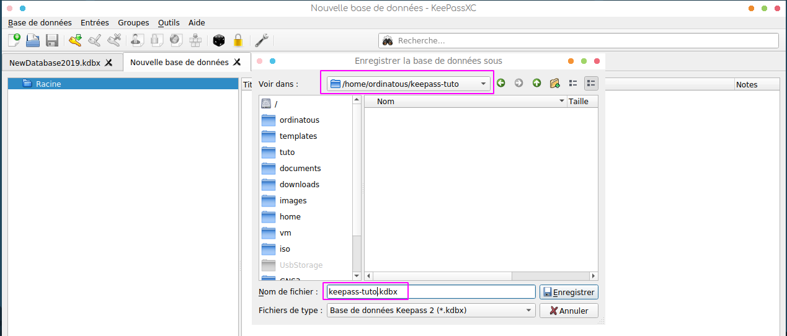
Saisir alors 2 fois le mot de passe fort, ou une passphrase , si c’est rouge , c’est que les 2 mots de passe ne correspondent pas.
Cliquer sur le petit icone pour faire apparaître les mots de passe et corriger.
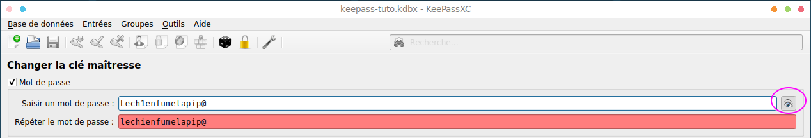
Fichier clé
Créer ensuite un fichier clé.
Dans l’idéal , la stocker sur un autre support , comme une clé USB. Ce qui rendra votre base inviolable.
Par contre il ne faut pas perdre sa clé, ou conserver une copie en lieu sûre.
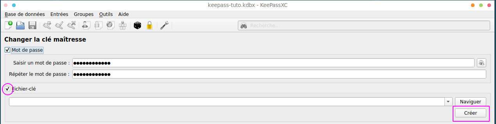
Ici , il est dans le même répertoire que la base.
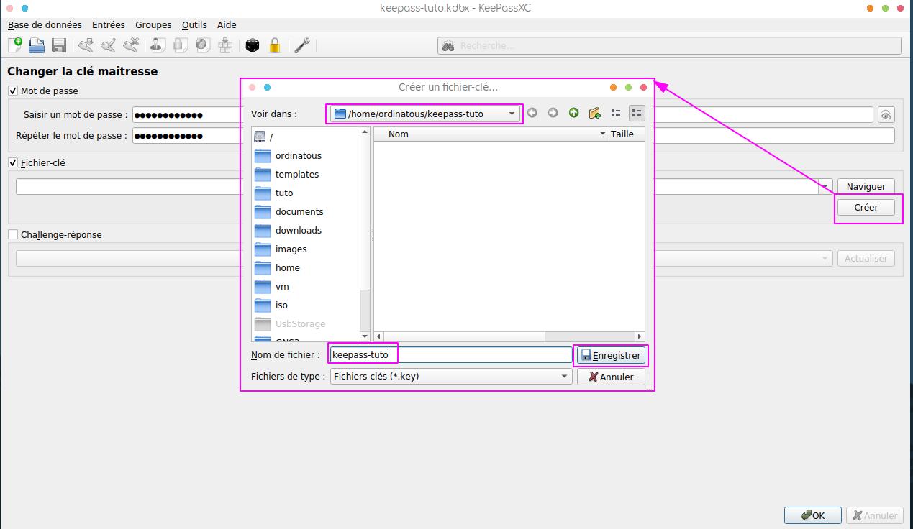
On valide en faisant Ok
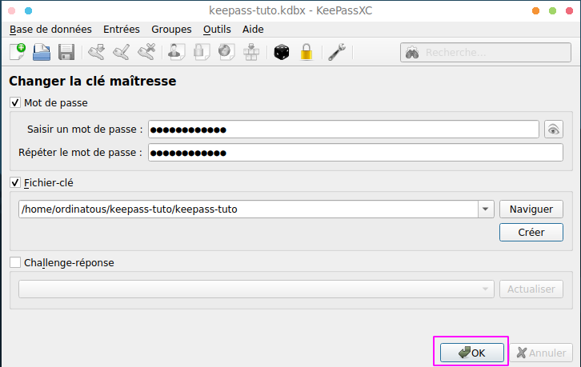
Options
Beaucoup d’options son activées par défaut, permettant d’assurer un minimum de sécurité lors de l’utilisation de keepassXC.
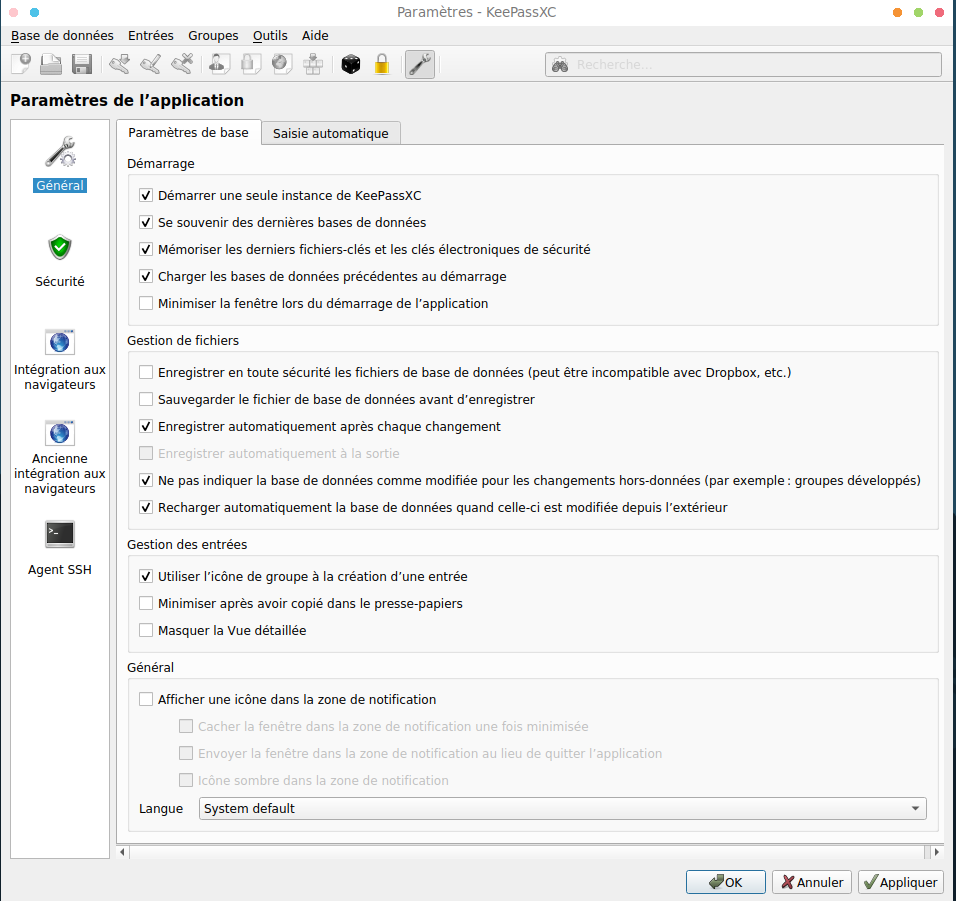
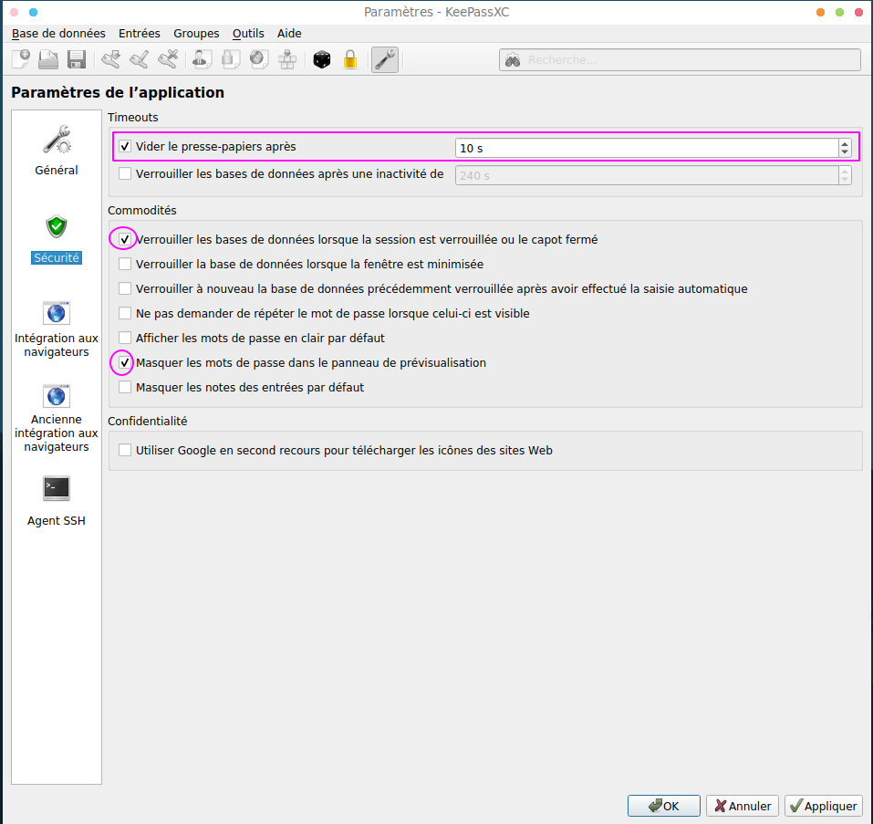
Comfort
Intégration web
Il est possible d’intégrer l’utilisation de keepassXC au navigateur internet.
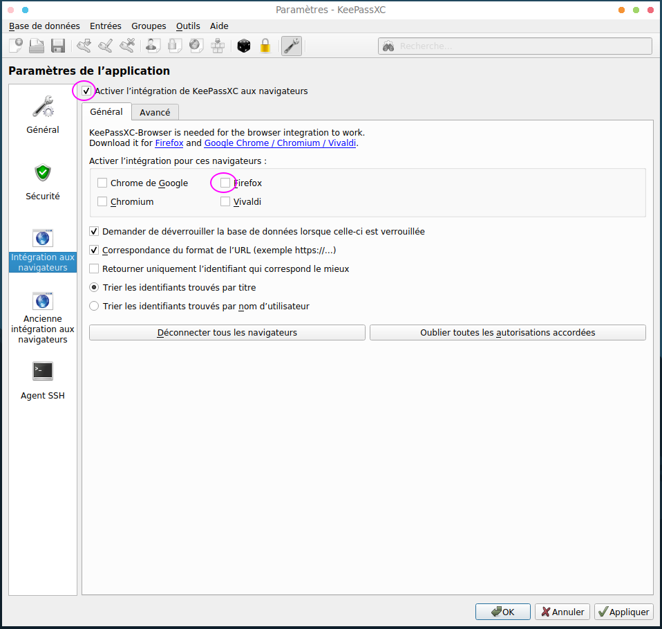
Pour cela, simplement ajouter le addons à firefox, si vous utilisez Firefox. 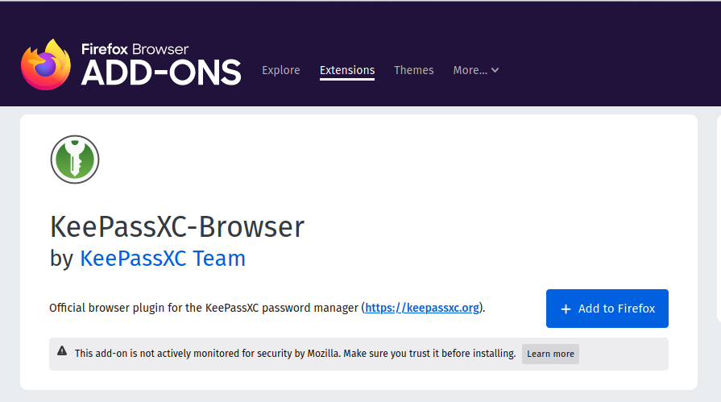
Connecter la base avec le navigateur en créant une clé. La base est automatiquement détectée.
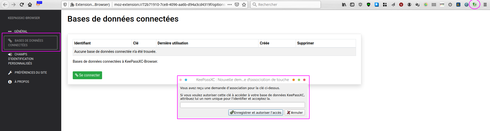
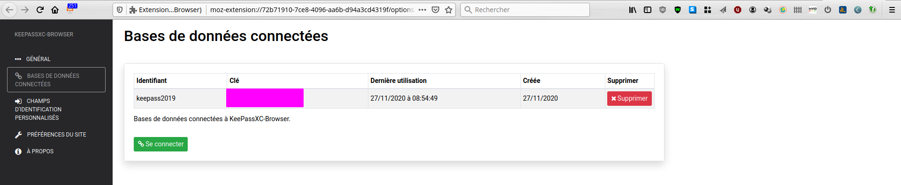
Test de la connexion
Par exemple , j’avais essayé ghost.org comme plateforme de blog..
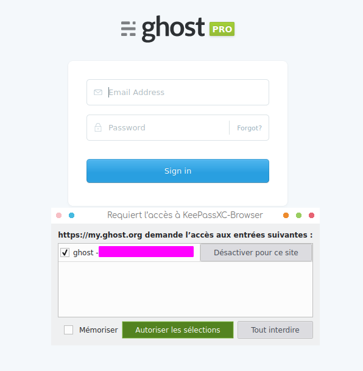 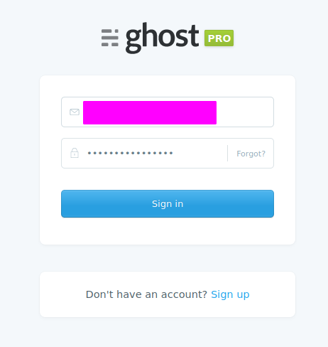
Bon ma periode d’essai est dépassée… mais ça fonctionne pas mal.
!bangbang! Attention , en cas d’erreur, vérifier que les champs soient propre et que des mots comme username, ou password ne soient en trop.
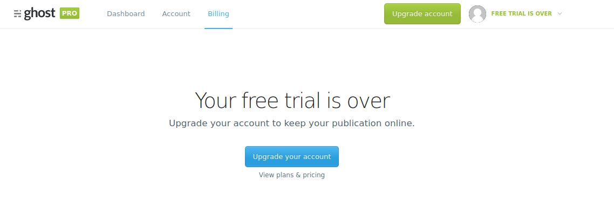
Création d’un mot de passe
L’avantage d’un gestionnaire, c’est qu’il permet la création de mots de passe réellement très fort.
Ce qui permet de limiter fortement le nombre de candidats au brute-force.
Voyons ce que raconte cette enquête sur le palmares des mots de passe les plus utilisés.
N’écoutez pas les fatalistes, ou les farfelus qui vous parleront d’ordinateur quantique. Ils ne sont pas en phase avec la réalité.
Cliquer sur la petite clé
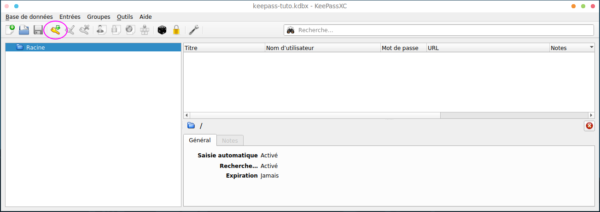
Lui donner un nom, et un utilisateur.
A ce niveau , vous indiquez simplement si c’est le bon coin, zalando, carrefour, et le compte qui y correspond. 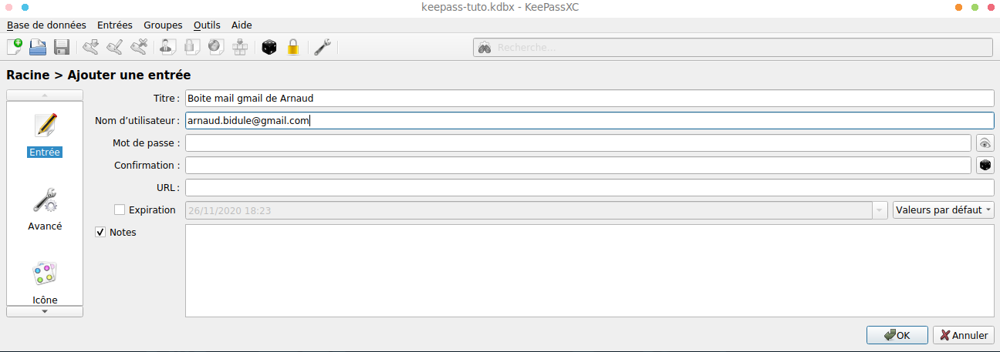
Assistant de création
Utiliser le dé pour créer un mot de passe aléatoir en activant les majuscules, les minuscules, les caractères spéciaux, le nombre de caractères à 22 c’est pas mal.
L’ANSSI, l’Agence National de Sécurité des Systèmes d’Informations , propose un outils pour controler la robustesse de votre mot de passe.
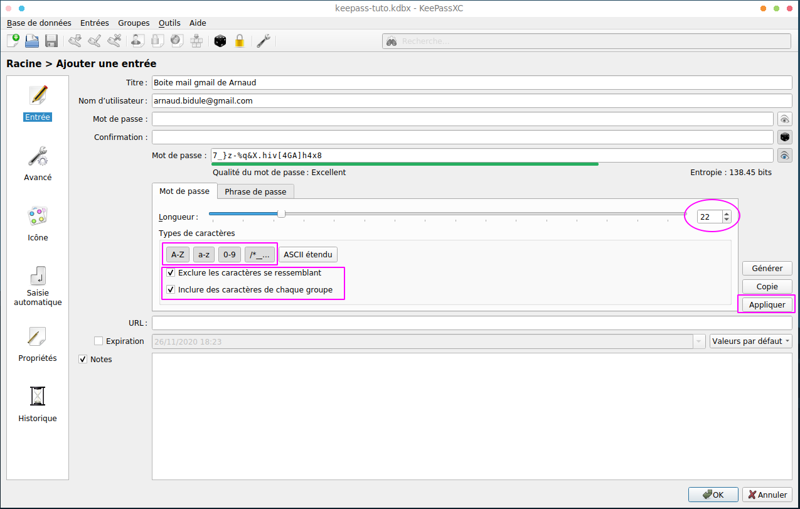
On peut ajouter une icone pour reconnaitre plus facilement un compte en fonction de son utilisation.
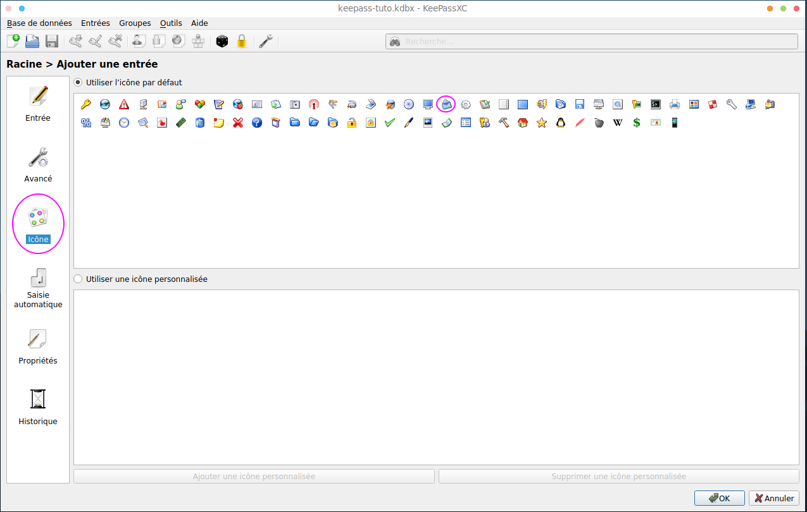
Voila: 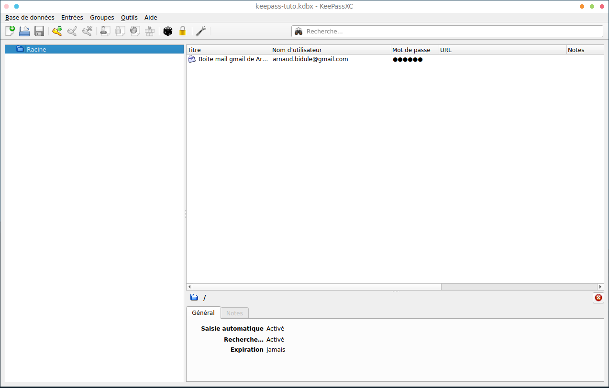
On peut ensuite créer des groupes comme boite mail. 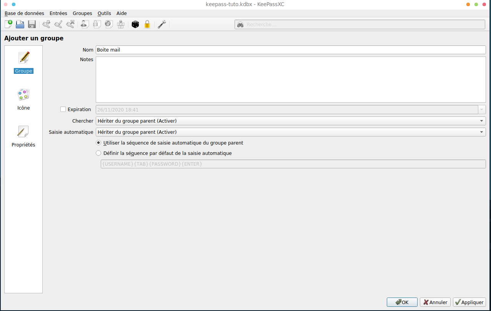
Il suffit de glisser déposer ensuite le mot de passe dans le bon groupe.

On pourra également importer d’autres bases de mots de passe stockés aux
formats, CSV (perso ça n’a pas bien fonctionné), ou fusionner d’autres
bases KDB (ça j’ai déjà fait).
Ce travail est sous licence Attribution-NonCommercial 4.0
International.